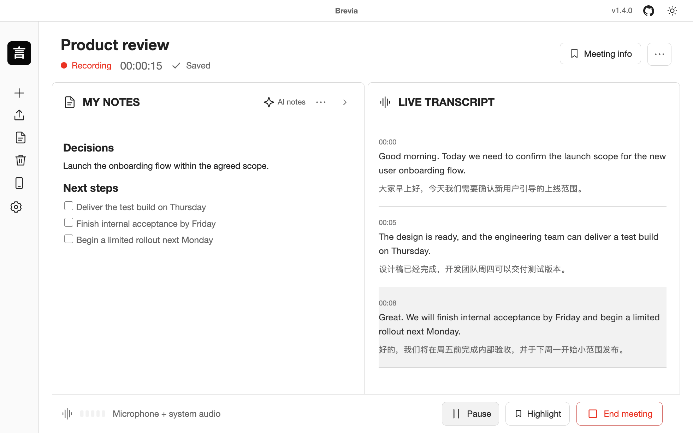
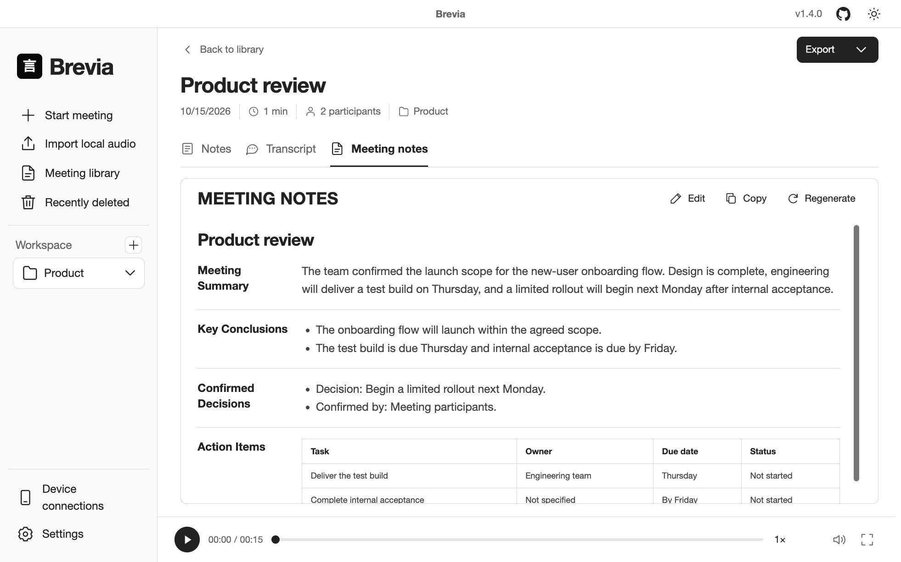
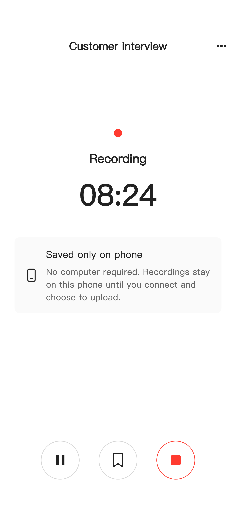
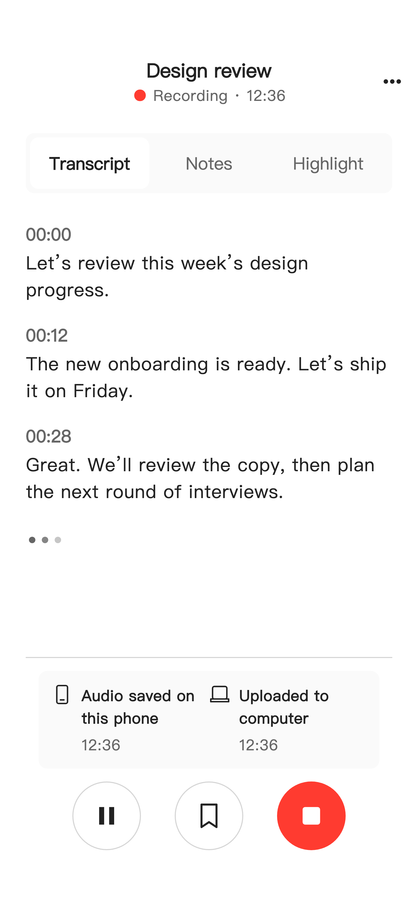
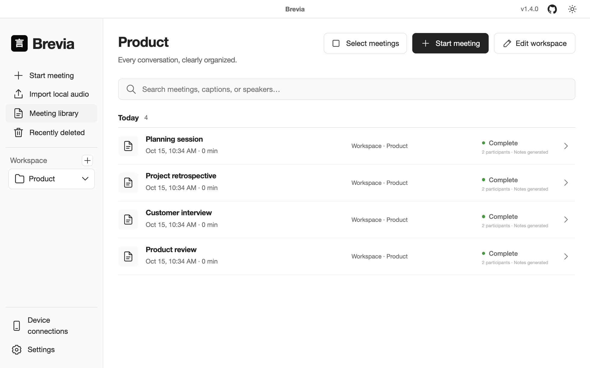

From conversation to what’s next.
Capture the conversation, follow the transcript, and keep your own thoughts. One connected flow, without switching between tools.
Live transcription. AI notes. Your phone and computer, in sync.
Turn every
conversation into something you can use.
Free & open sourceNo account neededLocal-first

Capture audio from meeting apps, browsers and media players. Add your microphone to record both sides.
From the first word to the next step.
Less switching. More attention.
Capture the conversation, follow the transcript, and keep your own thoughts. One connected flow, without switching between tools.
Live transcripts, AI notes, and meeting minutes, working together in Brevia.
Process on your own computer. Stay in control of your data and your choices.
Capture your microphone and system audio together. Transcripts follow each pause. Add translation when you need it.
Decisions, action items, important numbers, and open questions, drawn from the conversation. Accept useful suggestions and keep your own thoughts.
Create editable meeting minutes with decisions and action items. Use local AI or connect a provider you choose.

Your phone captures. Your computer transcribes.
Keep the conversation, wherever
you are.
Save on your phone. Upload when you choose.
Your computer processes. Words and notes come back.
Start on your computer. Capture audio up close.
AI models run on your computer, not your phone.


Organize with workspaces. Search titles, transcripts, and tags.
Replay, edit, and
export. Keep good ideas moving.

Your words. Your workflow.
Markdown · TXT · SRT · DOCX · PDF · JSON · WAVSpeech recognition runs on your computer.
Download your models, then
transcribe and use local AI offline.
Explore the code. Start recording without an account.
Install Brevia. Then download the speech models you need.
Desktop v1.4.0
Apple Silicon · macOS 14+
x64
No account or subscription. Optional online AI is billed by your chosen provider.
Yes. After downloading the models, desktop transcription and local AI work offline. Independent phone recording needs no internet; collaborative transcription needs a connection to your computer.
Your phone can record independently. Speech recognition and AI run on the connected computer, which sends the transcript back. Speech recognition models do not run on the phone.
Independent recordings stay on your phone. When working with your computer, audio is sent to that computer for processing. Local transcription and local AI run there. If you enable online AI, relevant text goes to your chosen provider.
Yes. Export transcripts and notes as Markdown, TXT, JSON, SRT, DOCX, or PDF. Audio can be exported as WAV.
Brevia is open source under the ISC license. No account or subscription is needed. The app and local features are free. If you choose online AI, your provider charges for its usage.